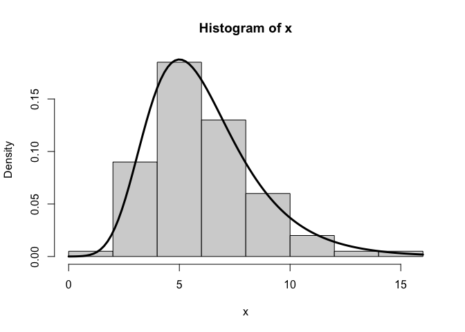
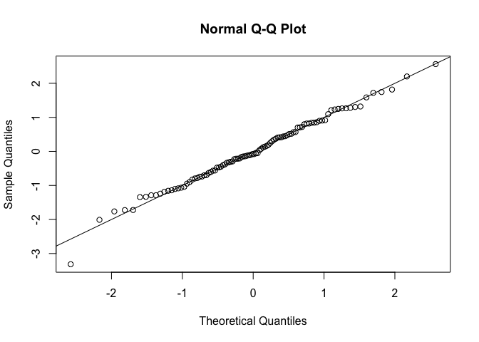

The RTMB package enables powerful and flexible statistical modelling with rich random effect structures using automatic differentiation (AD). However, its built-in support for probability distributions is limited to standard cases. RTMBdist fills this gap by providing a collection of non-standard, AD-compatible distributions, extending the range of models that can be implemented and estimated with RTMB. Most of the distributions implemented in RTMBdist allow for automatic simulation and residual calculation by RTMB.
The full list of distributions currently available is given in the List of distributions vignette.
Feel free to contribute!
Installation
You can install the development version of RTMBdist from GitHub with:
devtools::install_github("janoleko/RTMBdist")Example
Let’s do numerical maximum likelihood estimation (MLE) with a gumbel distribution:
# simulate data
x <- rgumbel(100, location = 5, scale = 2)
# negative log-likelihood function
nll <- function(par) {
x <- OBS(x) # mark x as the response
loc <- par[1]; ADREPORT(loc)
scale <- exp(par[2]); ADREPORT(scale)
-sum(dgumbel(x, loc, scale, log = TRUE))
}
# automatically differentiable objective function object
obj <- MakeADFun(nll, c(5, log(2)), silent = TRUE)
# model fitting
opt <- nlminb(obj$par, obj$fn, obj$gr)
# model summary
summary(sdreport(obj))
#> Estimate Std. Error
#> par 5.0015427 0.20659355
#> par 0.6732893 0.07663174
#> loc 5.0015427 0.20659355
#> scale 1.9606760 0.15025002
# plot the estimated density
hist(x, prob = TRUE)
curve(dgumbel(x, opt$par[1], exp(opt$par[2])), add = TRUE, lwd = 3)
Through the magic of RTMB, we can also immediately simulate new data from the fitted model and calculate residuals:
# simulate new data
x_new <- obj$simulate()$x
# calculate residuals
osa <- oneStepPredict(obj, method = "cdf", trace = FALSE)
qqnorm(osa$res); abline(0, 1)